Chapter - 10 Data Analytics - Google course
The following chapter includes the notes from the Google Data Analytics Course.
#Packages
library("tidyverse")10.1 Basics
Data is a collection of facts that can be used to draw conclusions, make predictions, and assist in decision-making.
Data analysis is the collection, transformation, and organization of data in order to draw conclusions, make predictions, and drive informed decision-making.
A data analyst is someone who collects, transforms, and organizes data in order to help make informed decisions.
Data analytics in the simplest terms is the science of data. It’s a very broad concept that encompasses everything from the job of managing and using data to the tools and methods that data workers use each and every day.
Companies hire data analysts to control the waves of data they collect every day, makes sense of it, and then draw conclusions or make predictions. This is the process of turning data into insights, and it’s how analysts help businesses put all their data to good use.
People analytics is the practice of collecting and analyzing data on the people who make up a company’s workforce in order to gain insights to improve how the company operates.
10.1.1 Process of data analysis
Six steps of data analysis:
Ask: Business Challenge/Objective/Question
Prepare: Data generation, collection, storage, and data management
Process: Data cleaning/data integrity
Analyze: Data exploration, visualization, and analysis
Share: Communicating and interpreting results
Act: Putting your insights to work to solve the problem
Or in other words:
To determine what would qualify as a successful result, you ask effective questions and collaborated with leaders and managers who are interested in the outcome of the analysis. Asking questions to define both the issue to be solved and what would equal a successful result.
Next, is to prepared by building a timeline and collecting data designed to be inclusive.
Then process the data by cleaning it to make sure it is complete, correct, relevant, and free of errors and outliers.
Analyze the clean data.
Share findings and recommendations with team leaders.
Leadership acts on the results and focuses on improving key areas.
Phases of the process of analyzing data - data analysis:
Ask
Find out the root problem
Understanding stakeholders expectation
Process
- Find and eliminate any errors and inaccuracies that can get in the way of results. This usually means cleaning data, transforming it into a more useful format, combining two or more data sets to make information more complete and removing outliers, which are any data points that could skew the information.
Data science: is defined as creating new ways of modeling and understanding the unknown by using raw data. Data scientists create new questions using data, while analysts find answers to existing questions by creating insights from data sources.
Data science includes three disciplines
Machine learning
Analytics
Statistics

Data ecosystem: a group of elements that interact with one another. Data ecosystems are made up of various elements that interact with one another in order to produce, manage, store, organize, analyze, and share data. These elements include hardware and software tools, and the people who use them.
The cloud is just a term used to describe the virtual location. Instead of on the computer hard drive, it is accessed through the internet.
Data-driven decision-making is defined as using facts to guide business strategy. The first step in data-driven decision-making is figuring out the business need. Usually, this is a problem that needs to be solved. Sometimes past experience helps you make a connection that no one else would notice.
Analytical skills:
Curiosity: Curiosity is all about wanting to learn something. Curious people usually seek out new challenges and experiences.
Understanding context: Context is the condition in which something exists or happens.
Having technical mindset: involves the ability to break things down into smaller steps or pieces and work with them in an orderly and logical way.
Data design: how you organize information.
Data strategy: the management of the people, processes, and tools used in data analysis.
Analytical thinking involves identifying and defining a problem and then solving it by using data in an organized, step-by-step manner.
Five key aspects to analytical thinking:
Visualization: important because visuals can help data analysts understand and explain information more effectively.
Strategy: Strategizing helps data analysts see what they want to achieve with the data and how they can get there.
Problem-orientation: using a problem-oriented approach in order to identify, describe, and solve problems.
Correlation: like a relationship. Correlation does not equal causation!
Big-picture and detail-oriented thinking: being able to see the big picture as well as the details.
Important questions to ask during data analysis:
What is the root cause of a problem?
Where are the gaps in our process?
Gap analysis: Gap analysis lets you examine and evaluate how a process works currently in order to get where you want to be in the future.
Life cycle of data =
Plan: Decide what kind of data is needed, how it will be managed, and who will be responsible for it.
Capture: Collect or bring in data from a variety of different sources.
Manage: Care for and maintain the data. This includes determining how and where it is stored and the tools used to do so.
Analyze: Use the data to solve problems, make decisions, and support business goals.
Archive: Keep relevant data stored for long-term and future reference.
Destroy: Remove data from storage and delete any shared copies of the data.
Database = A database is a collection of data stored in a computer system. When you maintain a database of customer information, ensuring data integrity, credibility, and privacy are all important concerns.
Most common tools
Query languages
Spreadsheets
Visualization tools
A function is a preset command that automatically performs a specific process or task using the data in a spreadsheet.
Data visualization is the graphical representation of information. Some examples include graphs, maps, and tables.
10.1.2 Spreadsheets
Data analysts rely on spreadsheets to collect and organize data. Two popular spreadsheet applications you will probably use a lot in your future role as a data analyst are Microsoft Excel and Google Sheets.
Structure data in a meaningful way by letting you
Collect, store, organize, and sort information
Identify patterns and piece the data together in a way that works for each specific data project
Create excellent data visualizations, like graphs and charts.
Observation = 1 row
A formula is a set of instructions that performs a specific action using the data in a spreadsheet.
Spreadsheets tasks:
Organize your data
Pivot table
- Sort & filter
Calculate your data
Formulas
Functions
Spreadsheets and the data life cycle:
Plan: develop organizational standards (formatting, headings, colors, how to order)
Capture: connecting spreadsheets so they are automatically updated from online source
Manage: Storing, organizing, filtering and updating and how the data is shared and kept safe
Analyze: formulas, aggregate, create reports and pivot tables
Archive: any that aren’t used often but want to reference later
Destroy: when you will never need it again.
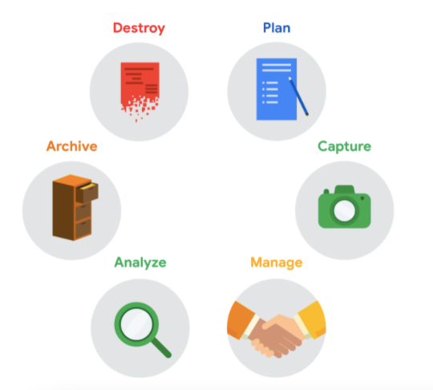
Formula is a set of instructions that perform a specific calculation.
COUNTIF() COUNT is the formula; it will be executed IF the conditions you create are true. For example, you could use =COUNTIF(A1:A16, “7”) to count only the cells that contained the number 7.
| Task | Process |
|---|---|
| Remove duplicates: | Data > Remove duplicates |
| Make all date format the same: | Format > number > date |
| Specified text separation (delimiter): | Data > split text to column |
| CONCATENATE: a function that joins multiple text strings into a single string. | =Concatenate(item1, item 2) or =Concatenate(item1, " ", item2) |
| SPLIT: splits based on a delimiter | =SPLIT(item, "") In between "" can be for example a , - or space |
| Select from a column part from the right: | =RIGHT(Range, # of characters) |
| Select from a column part from the left: | =LEFT(Range, # of characters) |
| Trim: Removing unnecessary spaces | =TRIM(Range) |
| Vertical lookup -> VLOOKUP | VLOOKUP(DATA, ’where you want to look’RANGE, column, false) False is for an exact match. |
| Returns something instead of NA | IFNA(#N/A, “Does not exist”) |
| Sorting with function | =SORT(range, number sort column, TRUE/FALSE) TRUE = ascending |
| Checking length | =LEN() |
Errors:
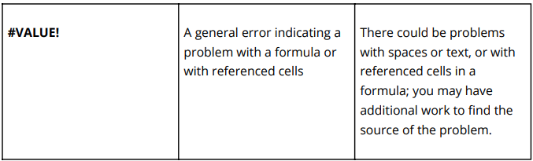
A function is a preset command that automatically performs a specific process or task using the data.
Data mapping is the process of matching fields from one database to another.
Data security: means protecting data from unauthorized access or corruption by adopting safety measures.
Encryption uses a unique algorithm to alter data and make it unusable by users and applications that don’t know the algorithm. This algorithm is saved as a “key” which can be used to reverse the encryption; so if you have the key, you can still use the data in its original form.
Tokenization replaces the data elements you want to protect with randomly generated data referred to as a “token.” The original data is stored in a separate location and mapped to the tokens. To access the complete original data, the user or application needs to have permission to use the tokenized data and the token mapping.
Cleaning with spreadsheets:
10.1.3 Query languages
A query language is a computer programming language that allows you to retrieve and manipulate data from a database.
SQL = Structured Query Language
A database is a collection of structured data stored in a computer system. Some popular Structured Query Language (SQL) programs include MySQL, Microsoft SQL Server, and BigQuery.
Query languages
Allow analysts to isolate specific information from a database(s)
Make it easier for you to learn and understand the requests made to databases
Allow analysts to select, create, add, or download data from a database for analysis
A query is a request for data or information from a database.
10.1.4 Visualization tools
Data analysts use a number of visualization tools, like graphs, maps, tables, charts, and more. Two popular visualization tools are Tableau and Looker.
These tools:
Turn complex numbers into a story that people can understand
Help stakeholders come up with conclusions that lead to informed decisions and effective business strategies
Have multiple features
- Tableau’s simple drag-and-drop feature lets users create interactive graphs in dashboards and worksheets
- Looker communicates directly with a database, allowing you to connect your data right to the visual tool you choose
A career as a data analyst also involves using programming languages, like R and Python, which are used a lot for statistical analysis, visualization, and other data analysis.
10.1.4.1 Tableau
Attribute is a characteristic or quality of data used to label a column in a table.
Observation - row
In data analytics, fairness means ensuring that your analysis does not create or reinforce bias. This requires using processes and systems that are fair and inclusive.
A business task is the question or problem data analysis answers for business.
10.2 Programming
Computer programming refers to giving instructions to a computer to perform an action or set of actions. You can use different programming languages to write these instructions. The R programming language is super useful for organizing, cleaning, and analyzing data.
Programming means giving instructions to a computer to perform an action or set of actions.
Programming helps you
- Clarify the steps of your analysis
Saves time
Lets you easily reproduce and share your work
Programming languages are the words and symbols we use to write instructions for computers to follow. Programming languages have their own set of rules for how these words and symbols should be used, called syntax.
Syntax shows you how to arrange the words and symbols you enter so they make sense to a computer.
Coding is writing instructions to the computer in the syntax of a specific programming language.
10.2.1 R Programming
R is a programming language frequently used for statistical analysis, visualization and other data analysis. R has become a preferred programming language of scientists, statisticians and data analysts around the world. R is accessible, data-centric, open-source and has an active community of users.
RStudio is a type of software application known as an integrated development environment (IDE). An IDE brings together all the tools you may want to use in a single place.
library("palmerpenguins")
library("lubridate") R fundamentals
An argument is information that a function in R needs in order to run.
A variable is a representation of a value in R that can be stored for use later during programming. Variables can also be called objects.
A vector is a group of data elements of the same type stored in a sequence in R. You can make a vector using the combined function. In R this function is just the letter c followed by the values you want in your vector inside parentheses.
There are two types of vectors:
Atomic vectors
Lists
The four most common atomic vectors:
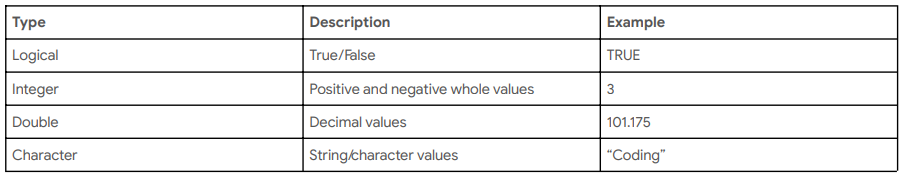

Operator = a symbol that names the type of operation or calculation to be performed in a formula.
You should use an operator to assign a value to a variable in R. You should use operators such as <- after a variable to assign a value to it. An argument is information that a function in R needs in order to run and does not assign value to variables.
- Assignment operators: are used to assign values to variables and vectors such as: <- or =
r = 5
t = 5
x <- 5 + 5
y = r + t- Arithmetic operators: +, -, :, x
5 * 5[1] 25y + x[1] 20- Logical operators: AND (&), OR (|), NOT (!)
TRUE & TRUE[1] TRUETRUE | FALSE [1] TRUE!TRUE # Not true means false[1] FALSE- Relations operators: identify how one R object relates to another—like whether an object is less than, equal to, or greater than another object. Output for relational operators is either TRUE or FALSE.
x < y[1] FALSEx > y[1] FALSEy >= 10[1] TRUEy <= 10[1] TRUEy==5[1] FALSEx != 2[1] TRUELists are different from atomic vectors because their elements can be of any type—like dates, data frames, vectors, matrices, and more. Lists can even contain other lists. For example:
list("a", 1L, 1.5, TRUE)[[1]]
[1] "a"
[[2]]
[1] 1
[[3]]
[1] 1.5
[[4]]
[1] TRUEstr(list("a", 1L, 1.5, TRUE)) # explains the elements of a listList of 4
$ : chr "a"
$ : int 1
$ : num 1.5
$ : logi TRUELubridate package:
today() #current date[1] "2021-10-18"now() #current date-time[1] "2021-10-18 15:55:37 CEST"ymd("2021-01-20")[1] "2021-01-20"ymd_hms("2021-01-20 20:11:59")[1] "2021-01-20 20:11:59 UTC"as_date(now())[1] "2021-10-18"A conditional statement is a declaration that if a certain condition holds, then a certain event must take place. For example, “If the temperature is above freezing, then I will go outside for a walk.” Examples of conditional statements:
if()
else()
else if()
if()
x <- 4 # here x is a positive number
if (x > 0) {
print("x is a positive number")
}[1] "x is a positive number"else()
x <- 0 # here x is not a positive number
if (x > 0) {
print("x is a positive number")
} else {
print("x is not a positive number")
}[1] "x is not a positive number"else if()
x <- -1
if (x < 0) {
print("x is a negative number")
} else if (x == 0) {
print("x is zero")
} else {
print("x is a positive number")
}[1] "x is a negative number"x <- 10
if (x < 0) {
print("x is a negative number")
} else if (x == 0) {
print("x is zero")
} else {
print("x is a positive number")
}[1] "x is a positive number"10.2.1.1 Data frame
A data frame is a collection of columns–similar to a spreadsheet or SQL table. Each column has a name at the top that represents a variable, and includes one observation per row. Data frames help summarize data and organize it into a format that is easy to read and use.
Tibble
In the tidyverse, tibbles are like streamlined data frames. They make working with data easier, but they’re a little different from standard data frames. First, tibbles never change the data types of the inputs. They won’t change your strings to factors or anything else.
Variables are organized into columns. Observations are organized into rows
library(dplyr)
library(ggplot2)
data("diamonds")
glimpse(diamonds) # basic informationRows: 53,940
Columns: 10
$ carat <dbl> 0.23, 0.21, 0.23, 0.29, 0.31, 0.24, 0.24, 0.26, 0.22, 0.23, 0.…
$ cut <ord> Ideal, Premium, Good, Premium, Good, Very Good, Very Good, Ver…
$ color <ord> E, E, E, I, J, J, I, H, E, H, J, J, F, J, E, E, I, J, J, J, I,…
$ clarity <ord> SI2, SI1, VS1, VS2, SI2, VVS2, VVS1, SI1, VS2, VS1, SI1, VS1, …
$ depth <dbl> 61.5, 59.8, 56.9, 62.4, 63.3, 62.8, 62.3, 61.9, 65.1, 59.4, 64…
$ table <dbl> 55, 61, 65, 58, 58, 57, 57, 55, 61, 61, 55, 56, 61, 54, 62, 58…
$ price <int> 326, 326, 327, 334, 335, 336, 336, 337, 337, 338, 339, 340, 34…
$ x <dbl> 3.95, 3.89, 4.05, 4.20, 4.34, 3.94, 3.95, 4.07, 3.87, 4.00, 4.…
$ y <dbl> 3.98, 3.84, 4.07, 4.23, 4.35, 3.96, 3.98, 4.11, 3.78, 4.05, 4.…
$ z <dbl> 2.43, 2.31, 2.31, 2.63, 2.75, 2.48, 2.47, 2.53, 2.49, 2.39, 2.…colnames(diamonds) # shows column names [1] "carat" "cut" "color" "clarity" "depth" "table" "price"
[8] "x" "y" "z" head(mutate(diamonds, carat_2=carat*100)) # adds an additional column to the data frame# A tibble: 6 × 11
carat cut color clarity depth table price x y z carat_2
<dbl> <ord> <ord> <ord> <dbl> <dbl> <int> <dbl> <dbl> <dbl> <dbl>
1 0.23 Ideal E SI2 61.5 55 326 3.95 3.98 2.43 23
2 0.21 Premium E SI1 59.8 61 326 3.89 3.84 2.31 21
3 0.23 Good E VS1 56.9 65 327 4.05 4.07 2.31 23
4 0.29 Premium I VS2 62.4 58 334 4.2 4.23 2.63 29
5 0.31 Good J SI2 63.3 58 335 4.34 4.35 2.75 31
6 0.24 Very Good J VVS2 62.8 57 336 3.94 3.96 2.48 24File
#dir.create("destination_folder")
file.create("new_csv_file.csv")[1] TRUEfile.copy("new_csv_file.csv" , "destination_folder")[1] FALSEunlink("new_csv_file.csv")names <- c("Marc", "Tom", "Esther", "Karen")
age <- c(13, 24, 55, 69)
people <- data.frame(names, age)
head(mutate(people, age_in_20 = age + 20))#adds an additional column names age age_in_20
1 Marc 13 33
2 Tom 24 44
3 Esther 55 75
4 Karen 69 89head(as_tibble(diamonds)) #creates tibble table# A tibble: 6 × 10
carat cut color clarity depth table price x y z
<dbl> <ord> <ord> <ord> <dbl> <dbl> <int> <dbl> <dbl> <dbl>
1 0.23 Ideal E SI2 61.5 55 326 3.95 3.98 2.43
2 0.21 Premium E SI1 59.8 61 326 3.89 3.84 2.31
3 0.23 Good E VS1 56.9 65 327 4.05 4.07 2.31
4 0.29 Premium I VS2 62.4 58 334 4.2 4.23 2.63
5 0.31 Good J SI2 63.3 58 335 4.34 4.35 2.75
6 0.24 Very Good J VVS2 62.8 57 336 3.94 3.96 2.48# data() #shows the available data sets in RMatrices
A matrix is a two-dimensional collection of data elements. This means it has both rows and columns. By contrast, a vector is a one-dimensional sequence of data elements. But like vectors, matrices can only contain a single data type. For example, you can’t have both logicals and numerics in a matrix.
matrix(c(3:8), nrow = 2) [,1] [,2] [,3]
[1,] 3 5 7
[2,] 4 6 8matrix(c(3:8), ncol = 2) [,1] [,2]
[1,] 3 6
[2,] 4 7
[3,] 5 810.2.1.2 Preparing the data for analysis
library("here")
library("skimr")
library("janitor")
library("palmerpenguins")
species <- as.character(penguins$species)
skim_without_charts(penguins) #extensive summary| Name | penguins |
| Number of rows | 344 |
| Number of columns | 8 |
| _______________________ | |
| Column type frequency: | |
| factor | 3 |
| numeric | 5 |
| ________________________ | |
| Group variables | None |
Variable type: factor
| skim_variable | n_missing | complete_rate | ordered | n_unique | top_counts |
|---|---|---|---|---|---|
| species | 0 | 1.00 | FALSE | 3 | Ade: 152, Gen: 124, Chi: 68 |
| island | 0 | 1.00 | FALSE | 3 | Bis: 168, Dre: 124, Tor: 52 |
| sex | 11 | 0.97 | FALSE | 2 | mal: 168, fem: 165 |
Variable type: numeric
| skim_variable | n_missing | complete_rate | mean | sd | p0 | p25 | p50 | p75 | p100 |
|---|---|---|---|---|---|---|---|---|---|
| bill_length_mm | 2 | 0.99 | 43.92 | 5.46 | 32.1 | 39.23 | 44.45 | 48.5 | 59.6 |
| bill_depth_mm | 2 | 0.99 | 17.15 | 1.97 | 13.1 | 15.60 | 17.30 | 18.7 | 21.5 |
| flipper_length_mm | 2 | 0.99 | 200.92 | 14.06 | 172.0 | 190.00 | 197.00 | 213.0 | 231.0 |
| body_mass_g | 2 | 0.99 | 4201.75 | 801.95 | 2700.0 | 3550.00 | 4050.00 | 4750.0 | 6300.0 |
| year | 0 | 1.00 | 2008.03 | 0.82 | 2007.0 | 2007.00 | 2008.00 | 2009.0 | 2009.0 |
penguins %>% head() select(species) Only the column species
# from the janitor package
head(rename_with(penguins, toupper)) #puts every column name in upper case# A tibble: 6 × 8
SPECIES ISLAND BILL_LENGTH_MM BILL_DEPTH_MM FLIPPER_LENGTH_… BODY_MASS_G SEX
<fct> <fct> <dbl> <dbl> <int> <int> <fct>
1 Adelie Torge… 39.1 18.7 181 3750 male
2 Adelie Torge… 39.5 17.4 186 3800 fema…
3 Adelie Torge… 40.3 18 195 3250 fema…
4 Adelie Torge… NA NA NA NA <NA>
5 Adelie Torge… 36.7 19.3 193 3450 fema…
6 Adelie Torge… 39.3 20.6 190 3650 male
# … with 1 more variable: YEAR <int>head(rename_with(penguins, tolower)) #puts every column name in lower case# A tibble: 6 × 8
species island bill_length_mm bill_depth_mm flipper_length_… body_mass_g sex
<fct> <fct> <dbl> <dbl> <int> <int> <fct>
1 Adelie Torge… 39.1 18.7 181 3750 male
2 Adelie Torge… 39.5 17.4 186 3800 fema…
3 Adelie Torge… 40.3 18 195 3250 fema…
4 Adelie Torge… NA NA NA NA <NA>
5 Adelie Torge… 36.7 19.3 193 3450 fema…
6 Adelie Torge… 39.3 20.6 190 3650 male
# … with 1 more variable: year <int>head(clean_names(penguins))# A tibble: 6 × 8
species island bill_length_mm bill_depth_mm flipper_length_… body_mass_g sex
<fct> <fct> <dbl> <dbl> <int> <int> <fct>
1 Adelie Torge… 39.1 18.7 181 3750 male
2 Adelie Torge… 39.5 17.4 186 3800 fema…
3 Adelie Torge… 40.3 18 195 3250 fema…
4 Adelie Torge… NA NA NA NA <NA>
5 Adelie Torge… 36.7 19.3 193 3450 fema…
6 Adelie Torge… 39.3 20.6 190 3650 male
# … with 1 more variable: year <int># This ensures that there's only characters, numbers, and underscores in the names.library(tidyr)
penguins2 <- penguins %>% arrange(-bill_length_mm)
penguins %>% group_by(island) %>% drop_na() %>% summarize(mean_bill_length_mm = mean(bill_length_mm))# A tibble: 3 × 2
island mean_bill_length_mm
<fct> <dbl>
1 Biscoe 45.2
2 Dream 44.2
3 Torgersen 39.0penguins %>% group_by(island) %>% drop_na() %>% summarize(max_bill_length_mm = max(bill_length_mm))# A tibble: 3 × 2
island max_bill_length_mm
<fct> <dbl>
1 Biscoe 59.6
2 Dream 58
3 Torgersen 46 penguins %>% group_by(species, island) %>% drop_na() %>% summarize(max_bl = max(bill_length_mm), mean_bl = mean(bill_length_mm))# A tibble: 5 × 4
# Groups: species [3]
species island max_bl mean_bl
<fct> <fct> <dbl> <dbl>
1 Adelie Biscoe 45.6 39.0
2 Adelie Dream 44.1 38.5
3 Adelie Torgersen 46 39.0
4 Chinstrap Dream 58 48.8
5 Gentoo Biscoe 59.6 47.6bookings_df <- read_csv("hotel_bookings.csv")
trimmed_df <- bookings_df %>%
select(hotel, is_canceled, lead_time)
trimmed_df2 <- trimmed_df %>%
select(hotel, is_canceled, lead_time) %>%
rename(hotel_type = hotel)
example_df <- bookings_df %>%
select(arrival_date_year, arrival_date_month) %>%
unite(arrival_month_year, c("arrival_date_month", "arrival_date_year"), sep = " ")
example_df <- bookings_df %>%
mutate(guests = adults + children + babies)
head(example_df)# A tibble: 6 × 33
hotel is_canceled lead_time arrival_date_ye… arrival_date_mo… arrival_date_we…
<chr> <dbl> <dbl> <dbl> <chr> <dbl>
1 Resort Hotel 0 342 2015 July 27
2 Resort Hotel 0 737 2015 July 27
3 Resort Hotel 0 7 2015 July 27
4 Resort Hotel 0 13 2015 July 27
5 Resort Hotel 0 14 2015 July 27
6 Resort Hotel 0 14 2015 July 27
# … with 27 more variables: arrival_date_day_of_month <dbl>,
# stays_in_weekend_nights <dbl>, stays_in_week_nights <dbl>, adults <dbl>,
# children <dbl>, babies <dbl>, meal <chr>, country <chr>,
# market_segment <chr>, distribution_channel <chr>, is_repeated_guest <dbl>,
# previous_cancellations <dbl>, previous_bookings_not_canceled <dbl>,
# reserved_room_type <chr>, assigned_room_type <chr>, booking_changes <dbl>,
# deposit_type <chr>, agent <chr>, company <chr>, …example_df <- bookings_df %>%
summarize(number_canceled = sum(is_canceled),
average_lead_time = mean(lead_time))
head(example_df)# A tibble: 1 × 2
number_canceled average_lead_time
<dbl> <dbl>
1 44224 104.Transforming Data
# first creating a data frame
id <- c(1:10)
name <- c("John Mendes", "Rob Stewart", "Rachel Abrahamson", "Christy Hickman", "Johnson Harper", "Candace Miller", "Carlson Landy", "Pansy Jordan", "Darius Berry", "Claudia Garcia")
job_title <- c("Professional", "Programmer", "Management", "Clerical", "Developer", "Programmer", "Management", "Clerical", "Developer", "Programmer")
employee <- data.frame(id, name, job_title)
head(employee) id name job_title
1 1 John Mendes Professional
2 2 Rob Stewart Programmer
3 3 Rachel Abrahamson Management
4 4 Christy Hickman Clerical
5 5 Johnson Harper Developer
6 6 Candace Miller Programmersep_employee <- separate(employee, name, into=c('first_name', 'last_name'), sep=' ') # splits a part of a column by the given seperator. In this case a space
head(sep_employee) id first_name last_name job_title
1 1 John Mendes Professional
2 2 Rob Stewart Programmer
3 3 Rachel Abrahamson Management
4 4 Christy Hickman Clerical
5 5 Johnson Harper Developer
6 6 Candace Miller Programmerunite(sep_employee, 'name', first_name, last_name, sep=' ') id name job_title
1 1 John Mendes Professional
2 2 Rob Stewart Programmer
3 3 Rachel Abrahamson Management
4 4 Christy Hickman Clerical
5 5 Johnson Harper Developer
6 6 Candace Miller Programmer
7 7 Carlson Landy Management
8 8 Pansy Jordan Clerical
9 9 Darius Berry Developer
10 10 Claudia Garcia Programmerpenguins %>%
head() %>%
mutate(body_mass_kg=body_mass_g/1000, flipper_length_m=flipper_length_mm/1000)# A tibble: 6 × 10
species island bill_length_mm bill_depth_mm flipper_length_… body_mass_g sex
<fct> <fct> <dbl> <dbl> <int> <int> <fct>
1 Adelie Torge… 39.1 18.7 181 3750 male
2 Adelie Torge… 39.5 17.4 186 3800 fema…
3 Adelie Torge… 40.3 18 195 3250 fema…
4 Adelie Torge… NA NA NA NA <NA>
5 Adelie Torge… 36.7 19.3 193 3450 fema…
6 Adelie Torge… 39.3 20.6 190 3650 male
# … with 3 more variables: year <int>, body_mass_kg <dbl>,
# flipper_length_m <dbl>A pipe is a tool in R for expressing a sequence of multiple operations. A pipe is represented by a % sign, followed by a > sign, and another % sign.
Nested describes code that performs a particular function and is contained within code that performs a broader function.
data("ToothGrowth")
head(ToothGrowth) len supp dose
1 4.2 VC 0.5
2 11.5 VC 0.5
3 7.3 VC 0.5
4 5.8 VC 0.5
5 6.4 VC 0.5
6 10.0 VC 0.5library(dplyr)
filtered_tg <- filter(ToothGrowth, dose==0.5)
head(arrange(filtered_tg,len)) len supp dose
1 4.2 VC 0.5
2 5.2 VC 0.5
3 5.8 VC 0.5
4 6.4 VC 0.5
5 7.0 VC 0.5
6 7.3 VC 0.5Nested function method: which is a function that is completely contained within another function. Reads from the inside out:
head(arrange(filter(ToothGrowth,dose==0.5),len)) len supp dose
1 4.2 VC 0.5
2 5.2 VC 0.5
3 5.8 VC 0.5
4 6.4 VC 0.5
5 7.0 VC 0.5
6 7.3 VC 0.5Pipe method:
Command + Shift + M to get the shortcut to inside pipe operators.
filtered_tootgroth <- ToothGrowth %>%
filter(dose==0.5) %>%
arrange(len)filtered_tootgrowth <- ToothGrowth %>%
filter(dose==0.5) %>%
group_by(supp) %>%
summarize(mean_len = mean(len,na.rm=T),.group="drop")
filtered_tootgrowth# A tibble: 2 × 3
supp mean_len .group
<fct> <dbl> <chr>
1 OJ 13.2 drop
2 VC 7.98 drop 10.2.1.3 Data structures
Data structure is a format for organizing and storing data. Most common data structures in the R programming language include: - Vectors - Data frames - Matrices - Arrays
Packages are units of reproducible R code that you can use to add more functionality to R. Packages will not only include the code itself, but also documentation that explains the package’s author, function, and any other packages that you will need to download.
Tidyverse is actually a collection of packages in R with a common design philosophy for data manipulation, exploration, and visualization.
installed.packages() to see which are currently loaded in the r session.
Tidyr is a package used for data cleaning to make tidy data.
Dplyr offers a consistent set of functions that help you complete some common data manipulation tasks. For example, the select function picks variables based on their names, and the filter function finds cases where certain conditions are true.
Factors store categorical data in R where the data values are limited and usually based on a finite group like country or year.
Anscombe’s quartet:
library("Tmisc")
data(quartet)
head(quartet) set x y
1 I 10 8.04
2 I 8 6.95
3 I 13 7.58
4 I 9 8.81
5 I 11 8.33
6 I 14 9.96quartet %>%
group_by(set) %>%
summarize(mean(x),sd(x), mean(y), sd(y), cor(x,y))# A tibble: 4 × 6
set `mean(x)` `sd(x)` `mean(y)` `sd(y)` `cor(x, y)`
<fct> <dbl> <dbl> <dbl> <dbl> <dbl>
1 I 9 3.32 7.50 2.03 0.816
2 II 9 3.32 7.50 2.03 0.816
3 III 9 3.32 7.5 2.03 0.816
4 IV 9 3.32 7.50 2.03 0.817ggplot(quartet, aes(x,y)) +
geom_point() +
geom_smooth(method=lm, se=FALSE) +
facet_wrap(~set)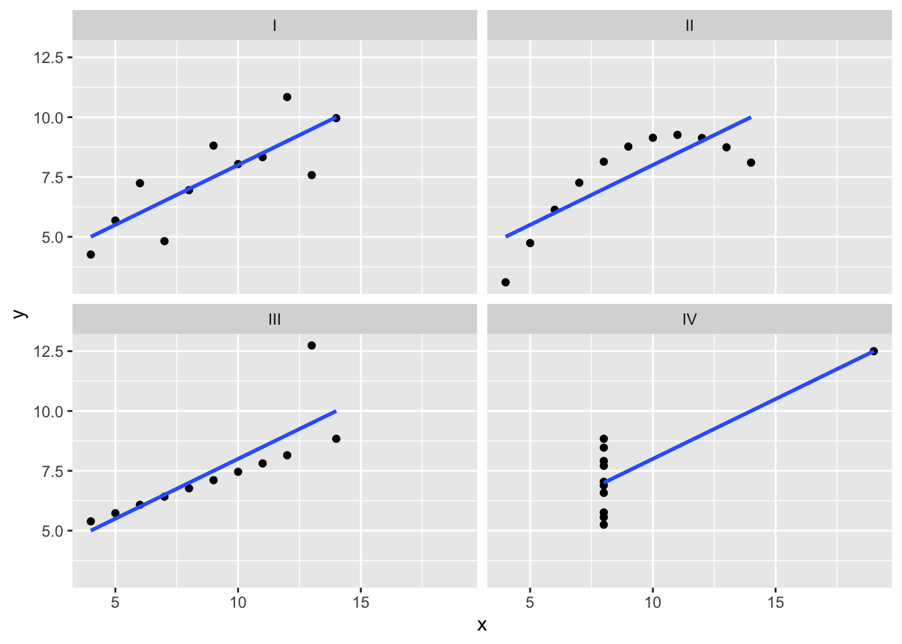
library('datasauRus')
ggplot(datasaurus_dozen, aes(x=x,y=y, colour=dataset)) +
geom_point() +
theme_void() +
theme(legend.position= "none") +
facet_wrap(~dataset)The bias function
Basically the bias function finds the average amount that the actual outcome is greater than the predicted outcome.
An unbiased model should be close to zero.
library("SimDesign")
# We'll use the bias function to compare forecasted temperatures with actual temperatures.
actual_temp <- c(68.3, 70, 72.4, 71, 67, 70)
predicted_temp <- c(67.9, 69, 71.5, 70, 67, 69)
bias(actual_temp, predicted_temp)[1] 0.7166667actual_sales <- c(150, 203, 137, 247, 116, 287)
predicted_sales <- c(200, 300, 150, 250, 150, 300)
bias(actual_sales, predicted_sales)[1] -35The predicted outcome is larger than the actual outcome which means they may be ordering too much stock for release days.
hotel_bookings <- read_csv("hotel_bookings.csv")
hotel_bookings_v2 <- arrange(hotel_bookings, desc(lead_time))hotel_bookings_city <- filter(hotel_bookings, hotel_bookings$hotel=="City Hotel")
mean(hotel_bookings_city$lead_time)[1] 109.7357hotel_summary <-
hotel_bookings %>%
group_by(hotel) %>%
summarise(average_lead_time=mean(lead_time),
min_lead_time=min(lead_time),
max_lead_time=max(lead_time))
head(hotel_summary)# A tibble: 2 × 4
hotel average_lead_time min_lead_time max_lead_time
<chr> <dbl> <dbl> <dbl>
1 City Hotel 110. 0 629
2 Resort Hotel 92.7 0 73710.2.1.4 Visualization in R
Ggplot:
The first two letters of ggplot2 actually stand for grammar of graphics.
Ggplot2 cheat sheet: https://ggplot2.tidyverse.org/
4 concepts:
Aesthetic: In ggplot2 an aesthetic is a visual property of an object in your plot.
Geom: A geom refers to the geometric object used to represent your data.For example, you can use points to create a scatter plot, bars to create a bar chart, or lines to create a line diagram.
Facets: Facets let you display smaller groups or subsets of your data. With facets, you can create separate plots for all the variables in your dataset.
Labels and annotate: the label and annotate functions let you customize your plot. You can add text like titles, subtitles and captions to communicate the purpose of your plot or highlight important data.
Building blocks of ggplot2:
A data set
A set of geoms
A set of aesthetics
library("ggplot2")
data(penguins)
ggplot(data = penguins) +
geom_point(mapping = aes(x = flipper_length_mm, y = body_mass_g))
colnames(penguins)[1] "species" "island" "bill_length_mm"
[4] "bill_depth_mm" "flipper_length_mm" "body_mass_g"
[7] "sex" "year" ggplot(data = penguins) +
geom_smooth(mapping = aes(x = bill_length_mm, y = bill_depth_mm))Mapping means matching up a specific variable in your dataset with a specific aesthetic. For example, you can map a variable to the x- axis of your plot, or you can map a variable to the y-axis of your plot.
#basic plot
ggplot(data = hotel_bookings) +
geom_point(mapping = aes(x = lead_time, y = children))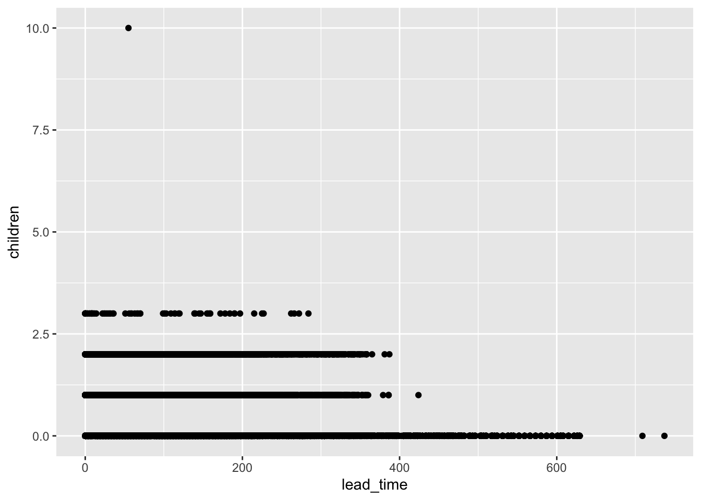
ggplot(data = penguins) +
geom_point(mapping = aes(x = flipper_length_mm, y = body_mass_g, color=species))# changing the aesthetic of the data by grouping per color
ggplot(data = penguins) +
geom_point(mapping = aes(x = flipper_length_mm, y = body_mass_g, shape=species))# shape per group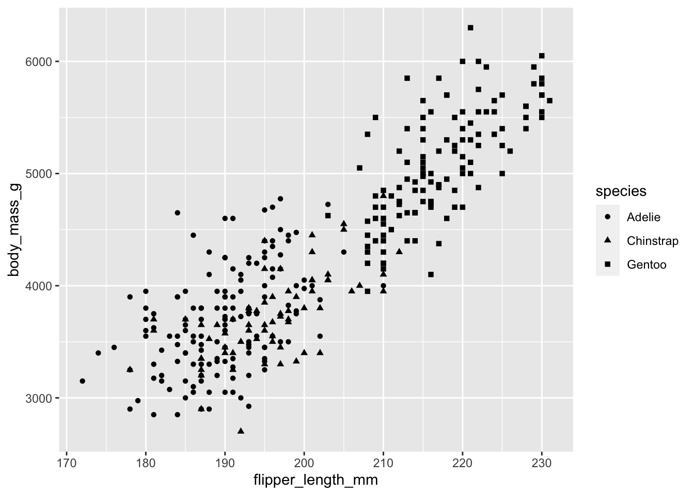
ggplot(data = penguins) +
geom_point(mapping = aes(x = flipper_length_mm, y = body_mass_g, shape=species, color=species))# shape per group & color
ggplot(data = penguins) +
geom_point(mapping = aes(x = flipper_length_mm, y = body_mass_g, shape=species, color=species, size=species))# shape per group & color & sizeggplot(data = penguins) +
geom_point(mapping = aes(x = flipper_length_mm, y = body_mass_g, alpha=species)) # aplhaDifferent geoms:
# Combining multiple geoms in one plot
ggplot(data = penguins) +
geom_point(mapping = aes(x = flipper_length_mm, y = body_mass_g)) +
geom_smooth(mapping = aes(x = flipper_length_mm, y = body_mass_g)) 
ggplot(data = penguins) +
geom_smooth(mapping = aes(x = flipper_length_mm, y = body_mass_g, linetype=species)) # seperate line for each groupggplot(data = penguins) +
geom_jitter(mapping = aes(x = flipper_length_mm, y = body_mass_g)) +
geom_smooth(mapping = aes(x = flipper_length_mm, y = body_mass_g))ggplot(data = diamonds) +
geom_bar(mapping = aes(x = cut, fill=cut))
ggplot(data = diamonds) +
geom_bar(mapping = aes(x = cut, fill=clarity))
Smoothing enables the detection of a data trend even when you can’t easily notice a trend from the plotted data points. Ggplot2’s smoothing functionality is helpful because it adds a smoothing line as another layer to a plot; the smoothing line helps the data to make sense to a casual observer.
Facet functions let you display smaller groups or subsets of your data. A facet is a side or section of an object, like the sides of a gemstone. Facets show different sides of your data by placing each subset on its own plot. Two functions for faceting:
- Facet_wrap()
ggplot(data=penguins) +
geom_point(mapping = aes(x = flipper_length_mm, y = body_mass_g, color=species)) +
facet_wrap(~species)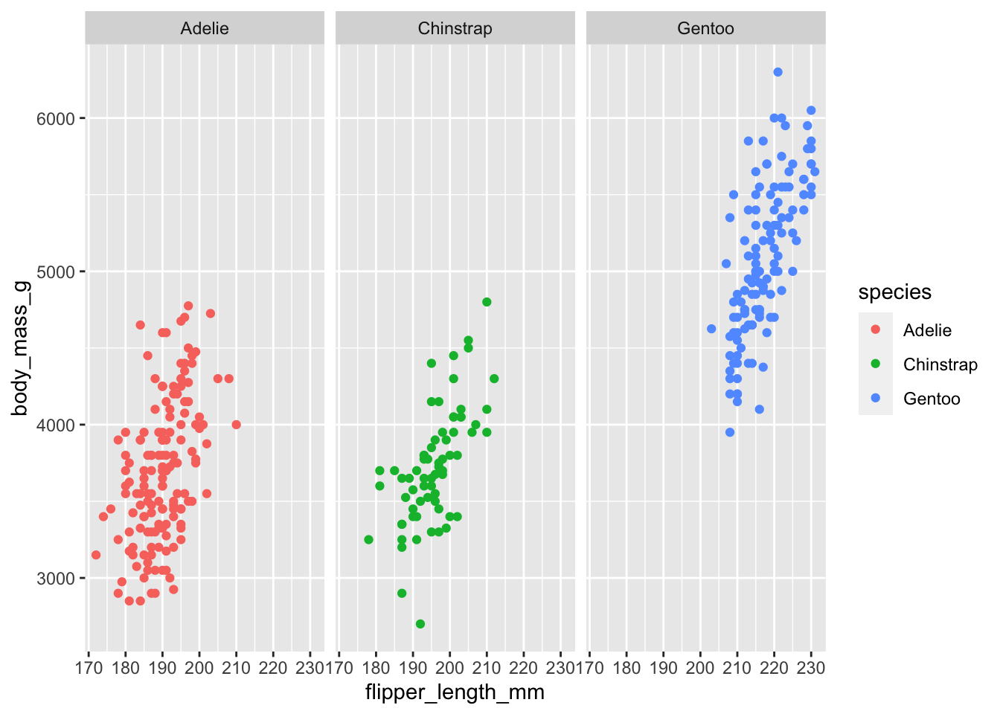
- Facet_grid()
ggplot(data=penguins) +
geom_point(mapping = aes(x = flipper_length_mm, y = body_mass_g, color=species)) +
facet_grid(sex~species)
ggplot(data = hotel_bookings) +
geom_bar(mapping = aes(x = distribution_channel))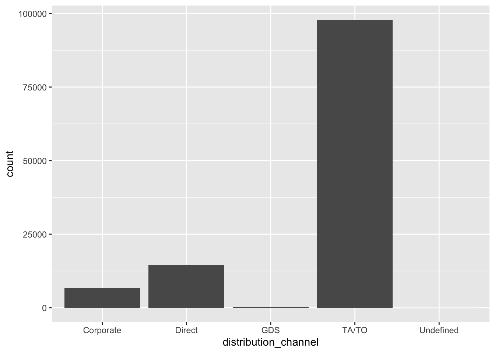
ggplot(data = hotel_bookings) +
geom_bar(mapping = aes(x = distribution_channel, fill=market_segment))
ggplot(data = hotel_bookings) +
geom_bar(mapping = aes(x = distribution_channel)) +
facet_wrap(~deposit_type)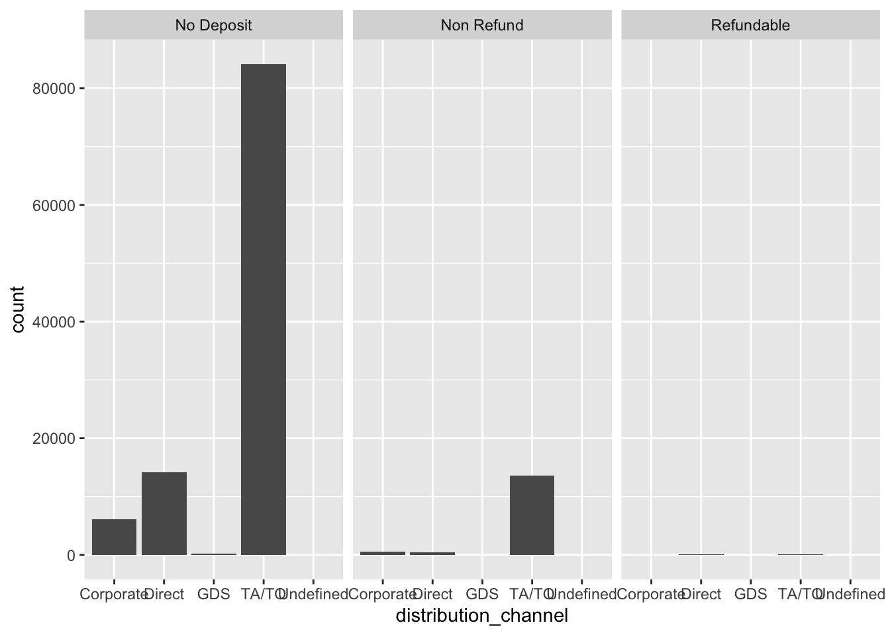
ggplot(data = hotel_bookings) +
geom_bar(mapping = aes(x = distribution_channel)) +
facet_wrap(~deposit_type) +
theme(axis.text.x = element_text(angle = 45))
ggplot(data = hotel_bookings) +
geom_bar(mapping = aes(x = distribution_channel)) +
facet_grid(~deposit_type) +
theme(axis.text.x = element_text(angle = 45))Filtering data for plotting:
penguins %>%
filter(species == "Chinstrap") %>%
ggplot(aes(x = bill_length_mm, y = flipper_length_mm, colour = sex)) +
geom_point(alpha = 0.3, position = position_jitter()) + stat_smooth(method = "lm")
ggplot(data = hotel_bookings) +
geom_bar(mapping = aes(x = hotel)) +
facet_wrap(~market_segment)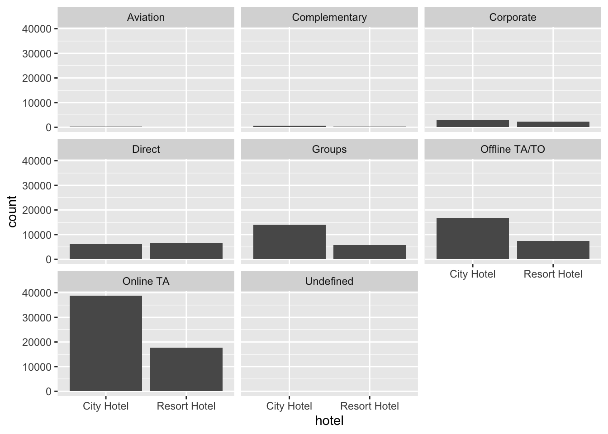
onlineta_city_hotels_v2 <- hotel_bookings %>%
filter(hotel=="City Hotel") %>%
filter(market_segment=="Online TA")
ggplot(data = onlineta_city_hotels_v2) +
geom_point(mapping = aes(x = lead_time, y = children))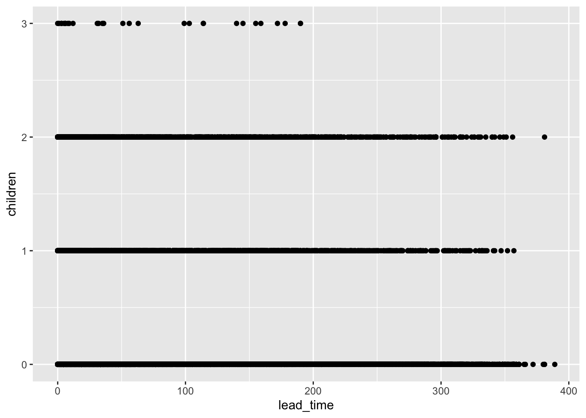
Annotation layer
Annotate: to annotate means to add notes to a document or diagram to explain or comment upon it.
ggplot(data=penguins) +
geom_point(mapping = aes(x = flipper_length_mm, y = body_mass_g, color=species)) +
labs(title="Palmer peguins: Body Mass vs Flipper Length", subtitle="Sample of three penguin species", caption="Data collected by Dr. Kristen Gorman") +
annotate("text", x=220,y=3500, label="The gentoos are the largest", color="red", fontface="bold", size=2, angle=45)p <- ggplot(data=penguins) +
geom_point(mapping = aes(x = flipper_length_mm, y = body_mass_g, color=species)) +
labs(title="Palmer peguins: Body Mass vs Flipper Length", subtitle="Sample of three penguin species", caption="Data collected by Dr. Kristen Gorman")
p + annotate("text", x=220,y=3500, label="The gentoos are the largest") # saves the plot as a variable and then using it in order to avoid typing too muchSaving plots with ggsave:
mindate <- min(hotel_bookings$arrival_date_year)
maxdate <- max(hotel_bookings$arrival_date_year)
ggplot(data = hotel_bookings) +
geom_bar(mapping = aes(x = market_segment)) +
facet_wrap(~hotel) +
theme(axis.text.x = element_text(angle = 45)) +
labs(title="Comparison of market segments by hotel type for hotel bookings",
caption=paste0("Data from: ", mindate, " to ", maxdate))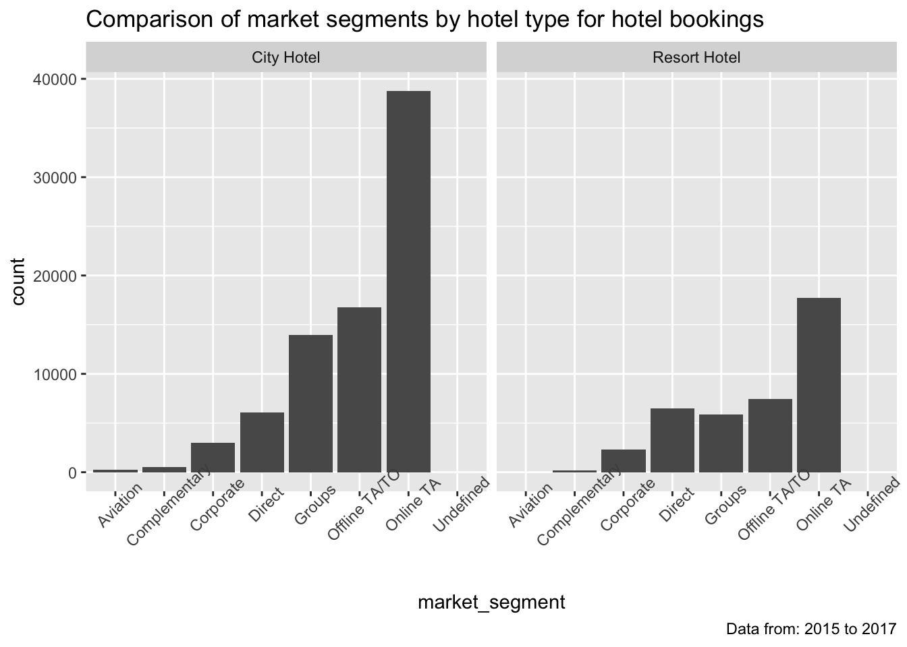
10.2.1.5 R markdown
R Markdown is a file format for making dynamic documents with R.You can use an R Markdown file as a code notebook to save, organize, and document your analysis using code chunks, comments, and other features.
Markdown is a syntax for formatting plain text files.
R Notebook lets users run the code and show the graphs and charts that visualize the code.
HTML is the set of markup symbols and codes used to create a web page.
Rmarkdown cheat sheet: https://rmarkdown.rstudio.com/lesson-15.html
Jupyter notebooks are documents that contain computer code and rich text elements – such as comments, links, or descriptions of your analysis and results.
YAML is a language for data that translates it, so it’s readable. YAML originally stood for yet another markup language. This section is called out using three dashes on the first and last lines. This syntax automatically creates the YAML header section when it’s used in an RMD file. In an RMD file, this section’s basically for metadata or the data about the data in the rest of the file. The title author, date and file type of an output are automatically included when you create a new file.
This:
#[click link](https://nl.wikipedia.org/wiki/Dog)
#Creates this: click link 
A delimiter is a character that indicates the beginning or end of a data item. For example: ```.
10.3 Questions to make data-drive decisions
Structured thinking is the process of recognizing the current problem or situation, organizing available information, revealing gaps and opportunities, and identifying the options. In this process, you address a vague, complex problem by breaking it down into smaller steps, and then those steps lead you to a logical solution.
This process involves four basic activities:
Recognizing the current problem or situation
Organizing available information
Revealing gaps and opportunities
Identifying your options
A scope of work or SOW is an agreed- upon outline of the work you’re going to perform on a project. For many businesses, this includes things like work details, schedules, and reports that the client can expect.
Deliverables
Timelines
Milestones
Reports
Marketing analytics is the process of measuring, analyzing, and managing a company’s marketing strategy and budget. Often, this involves identifying the company’s target audience.
Possible problems types:
Making predictions: involves using data to make an informed decision about how things may be in the future.
Categorizing things: assigning information to different groups or clusters based on common features.
Spotting something unusual: data analysts identify data that is different from the norm.
Identifying themes: Identifying themes takes categorization as a step further by grouping information into broader concepts.
Discovering connections: enables data analysts to find similar challenges faced by different entities, and then combine data and insights to address them.
Finding patterns: Data analysts use data to find patterns by using historical data to understand what happened in the past and is therefore likely to happen again.
10.3.0.1 SMART questions
- Specific questions are simple, significant and focused on a single topic or a few closely related ideas.
- Measurable questions can be quantified and assessed.
- Action-oriented questions encourage change.
- Relevant questions matter, are important and have significance to the problem you’re trying to solve.
- Time-bound questions specify the time to be studied.
Fairness: means ensuring that your questions don’t create or reinforce bias.
Leading questions: questions that only have a particular response. Example: This product is too expensive, isn’t it?
Closed-ended questions: questions that ask for a one-word or brief response only. Example:Were you satisfied with the customer trial?
Data-inspired decision-making explores different data sources to find out what they have in common.
Quantitative data is all about the specific and objective measures of numerical facts. This can often be the what, how many, and how often about a problem. In other words, things you can measure.
Qualitative data describes subjective or explanatory measures of qualities and characteristics or things that can’t be measured with numerical data.
Stakeholders are people that have invested time, interest, and resources into the projects.
Project managers support you and your work by managing the project timeline, providing guidance and resources, and setting up efficient workflows.
Questions to ask to stay on task:
Who are the primary and secondary stakeholders?
Who is managing the data?
Where can you go for help?
Four important questions related to your audience:in an email
Who is your audience?
What do they already know?
What do they need to know?
How can you best communicate what they need to know?
10.3.0.2 Data presentation tools
Reports: a static collection of data given to stakeholders periodically. Reports are great for giving snapshots of high level historical data for an organization. They’re quick to design and easy to use as long as you continually maintain them. They reflect data that’s already been cleaned and sorted.
Dashboards: monitors live, incoming data. Give your team more access to information being recorded, you can interact through data by playing with filters, and because they’re dynamic, they have long-term value. They take a lot of time to design and can actually be less efficient than reports, if they’re not used very often. Dashboards can sometimes overwhelm people with information too.
A pivot table is a data summarization tool that is used in data processing. Pivot tables are used to summarize, sort, re-organize, group, count, total,or average data stored in a database. It allows its users to transform columns into rows and rows into columns.
A metric is a single, quantifiable type of data that can be used for measurement. Think of it this way. Data starts as a collection of raw facts, until we organize them into individual metrics that represent a single type of data.
Return On Investment (ROI) = Net profit / cost of investment
Mathematical approach: It means looking at a problem and logically breaking it down step-by-step, so you can see the relationship of patterns in your data, and use that to analyze your problem.
Small data: These kinds of data tend to be made up of datasets concerned with specific metrics over a short, well defined period of time.
Big data: Big data on the other hand has larger, less specific datasets covering a longer period of time.
V words for big data:
10.4 Prepare for data exploration
Cookies: which are small files stored on computers that contain information about users. Cookies can help inform advertisers about your personal interests and habits based on your online surfing, without personally identifying you.
Types of data sources:
First-party data: This is data collected by an individual or group using their own resources.
Second-party data: which is data collected by a group directly from its audience and then sold.
Third-party data or data collected from outside sources might have come from a number of different sources before you investigated it. It might not be as reliable, but that doesn’t mean it can’t be useful. You’ll just want to make sure you check it for accuracy, bias, and credibility.
Population refers to all possible data values in a certain data set. Collecting data from the entire population can be pretty challenging.
Sample is a part of a population that is representative of the population.
Data collection considerations:
Select the right type of data
Determine the time frame
Collect new data?
Decide how data will be collected
Decide how much data to collect
Use existing data?
Choose data sources
Decide what data to use
Internal data: data that lives within a company’s own systems.
External data: data that lives and is generated outside of an organization.
Structured data: data that’s organized in a certain format, such as rows and columns. Spreadsheets and relational databases are two examples of software that can store data in a structured way.
Unstructured data: Not organized in any easy-to-identify way. Audio files, video files, emails, photos, and social media are all examples of unstructured data.
Unfair dataset: does not accurately represent the population, causing skewed outcomes, low accuracy levels, and unreliable analysis.
10.4.0.1 Data modeling
Data modeling is the process of creating diagrams that visually represent how data is organized and structured. These visual representations are called data models.
Data model: a model that is used for organizing data elements and how they relate to one another.
Three most common types:
- Conceptual data modeling gives a high-level view of the data structure, such as how data interacts across an organization. For example, to define the business requirements for a new database. A conceptual data model doesn’t contain technical details.
Logical data modeling focuses on the technical details of a database such as relationships, attributes, and entities. For example, how individual records are uniquely identified in a database.
Physical data modeling depicts how a database operates. Defines all entities and attributes used; for example, it includes table names, column names, and data types for the database.
Developing data models:
Entity Relationship Diagram (ERD): a visual way to understand the relationship between entities in the data model.
Unified Modeling Language (UML) diagram: are very detailed diagrams that describe the structure of a system by showing the system’s entities, attributes, operations, and their relationships.
Data types:
Numeric
Text data type/string data type: which is a sequence of characters and punctuation that contains textual information.
A Boolean data type: a data type with only two possible values: true or false.
Row -> record
Column -> field
Data formats:
Wide data: every data subject has a single row with multiple columns to hold the values of various attributes of the subject. Easily identify and quickly compare.
Long data is data in which each row is one time point per subject, so each subject will have data in multiple rows. More impact.
Data transformation is the process of changing the data’s format, structure, or values. Data transformation usually involves:
Adding, copying, or replicating data
Deleting fields or records
Standardizing the names of variables
Renaming, moving, or combining columns in a database
Joining one set of data with another
Saving a file in a different format. For example, saving a spreadsheet as a comma separated values (CSV) file.
Goals for data transformation might be:
Data organization: better organized data is easier to use
Data compatibility: different applications or systems can then use the same data
Data migration: data with matching formats can be moved from one system to another
Data merging: data with the same organization can be merged together
Data enhancement: data can be displayed with more detailed fields
Data comparison: apples-to-apples comparisons of the data can then be made

10.4.0.2 Bias
Data bias is a type of error that systematically skews results in a certain direction.
Several types of bias:
Sampling bias is when a sample isn’t representative of the population as a whole. You can avoid this by making sure the sample is chosen at random, so that all parts of the population have an equal chance of being included.
Observer bias: which is sometimes referred to as experimenter bias or research bias. The tendency for different people to observe things differently.
Interpretation bias: The tendency to always interpret ambiguous situations in a positive, or negative way.
Confirmation bias: is the tendency to search for, or interpret information in a way that confirms preexisting beliefs.
What is a good data source: ROCCC
R - Reliable
O - Original
C - Comprehensive
C - Current
C - Cited
Data ethics examples:
Ownership
Transaction transparency: the idea that all data processing activities and algorithms should be completely explainable and understood by the individual who provides their data.
Consent
Currency: individuals should be aware of financial transactions resulting from the use of their personal data and the scale of these transactions.
Privacy: information privacy or data protection. Privacy means preserving a data subject’s information and activity any time a data transaction occurs. It also covers a person’s legal right to their data.
Openness: Free access, usage and sharing of data.
Data anonymization is the process of protecting people’s private or sensitive data by eliminating that kind of information. Typically, data anonymization involves blanking, hashing, or masking personal information, often by using fixed-length codes to represent data columns, or hiding data with altered values.
Personally identifiable information, or PII, is data that is reasonably likely to identify a person and make information known about them.
Data base: a collection of data stored in a computer system.
A relational database is a database that contains a series of related tables that can be connected via their relationships. For two tables to have a relationship, one or more of the same fields must exist inside both tables.
A primary key is an identifier that references a column in which each value is unique. No rows can have the same primary key. For example a participant ID.
A foreign key is a field within a table that’s a primary key in another table. A column or group of columns in a relational database table that provides a link between the data in two tables. Can have multiple foreign keys in one table.
Example:
A primary key may also be constructed using multiple columns of a table. This type of primary key is called a composite key.
Metadata is data about data. Metadata tells you where the data comes from, when and how it was created, and what it’s all about. For example, an image on a laptop has metadata such as: pixels, when its taken, type of photo etc.
In data analytics, metadata helps data analysts interpret the contents of the data within a database. Three types:
Descriptive: describes a piece of data and can be used to identify it at a later point in time. F.E. book title, author etc.
Structural: metadata that indicates how a piece of data is organized and whether it’s part of one or more than one data collection. F.E. book pages chapters
Administrative: Administrative metadata is metadata that indicates the technical source of a digital asset. F.E. when the book was released.
A metadata repository is a database specifically created to store metadata.
Data analysts use metadata to create a single source of truth, keep data consistent and uniform, and ensure that the data we work with is accurate, precise, relevant, and timely.
Data governance is a process to ensure the formal management of a company’s data assets. It’s about the roles and responsibilities of the people who work with the metadata every day.
10.5 Processing data - cleaning
Data integrity is the accuracy, completeness, consistency, and trustworthiness of data throughout its life cycle.
Data replication is the process of storing data in multiple locations.
Data transfer is the process of copying data from a storage device to memory, or from one computer to another.
Data manipulation process involves changing the data to make it more organized and easier to read.
Proxy data: replacement data
Types of insufficient data
Data from only one source
Data that keeps updating
Outdated data
Geographically limited
The sample size helps ensure the degree to which you can be confident that your conclusions accurately represent the population.
Margin of error is the maximum that the sample results are expected to differ from those of the actual population.
#1 cause of poor quality data = human error
Dirty data is data that’s incomplete, incorrect, or irrelevant to the problem you’re trying to solve. Types of dirty data
Duplicate
Outdated
Incomplete
Incorrect / inaccurate
Inconsistent
Data engineers transform data into a useful format for analysis and give it a reliable infrastructure. This means they develop, maintain, and test databases, data processors and related systems.
Data warehousing specialists develop processes and procedures to effectively store and organize data.
Data validation is a tool for checking the accuracy and quality of data before adding or importing it.
Verification is a process to confirm that a data cleaning effort was well-executed and the resulting data is accurate and reliable.
A changelog is a file containing a chronologically ordered list of modifications made to a project. It’s usually organized by version and includes the date followed by a list of added, improved, and removed features. Changelogs are very useful for keeping track of how a dataset evolved over the course of a project.
Big picture view:
- Consider the business problem you’re trying to solve
- Consider the goal of the project
- Consider whether your data is capable of solving the problem
Documentation: process of tracking changes, additions, deletions and errors involved in your data cleaning effort. Goals:
Recover data-cleaning errors
Inform other users of changes
Determine quality of data
Changelogs:
Spreadsheets > version history
SQL > query history
10.6 Analyzing data
The four phases of analysis:
- Organize data
- Format and adjust data
- Get input from others
- Transform data
Transforming data means identifying relationships and patterns between the data, and making calculations based on the data you have.
Sorting involves arranging data into a meaningful order to make it easier to understand, analyze, and visualize.
Filtering is used when you are only interested in seeing data that meets a specific criteria, and hiding the rest.
Outliers are data points that are very different from similarly collected data and might not be reliable values.
Data validation: allows you to control what can and can’t be entered in your worksheet. Usually, data validation is used to add drop-down lists to cells with predetermined options for users to choose from.
Examples spreadsheets data validation:
Adding drop-down lists
Creating custom checkboxes
Protecting structured data and formulas
Data aggregation: the process of gathering data from multiple sources in order to combine it into a single summarized collection.